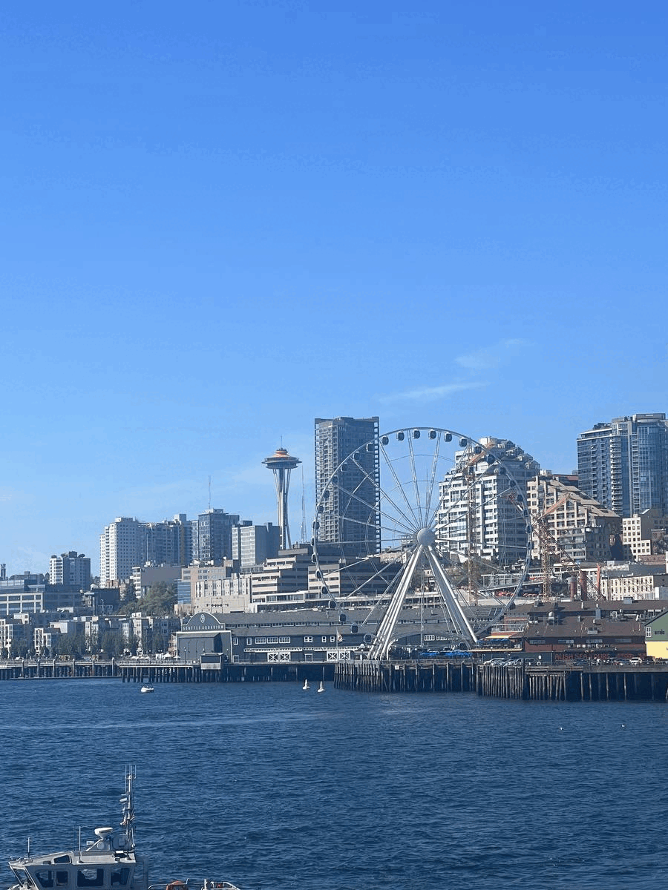

Yellowstone


Geographical Location: North America
Yellowstone is the first national park in the United States. It covers over 2.2 million acres, and provides an opportunity to see wildlife and explore geothermal areas. In fact, Yellowstone contains about half the world's active geysers.
These unique opportunities also bring out a lot of bad decisions among the tourists. Every year visitors injure themselves or the wildlife by getting close to the animals. You can see examples of people making bad decisions by visiting Yellowstone National Park: Invasion of the Idiots, Tourons of Yellowstone, or Cowboy State Daily.
Photo Gallery


Seattle, Washington
 Geographical Location: North America. Seattle, Washington is located in the United States on the North American continent. Seattle is broken up into neighborhoods, some being Capitol Hill, Pioneer Square and Queen Anne. Nearby suburbs include Mercer Island, Bellevue and Kirkland, located approximately 15-20 minutes from Seattle. The University of Washington is located in Seattle. There is an undergraduate and a graduate program within the University and it is known for its pristine academics. U of W is located on the Northern part of Seattle.
Photo Gallery
Geographical Location: North America. Seattle, Washington is located in the United States on the North American continent. Seattle is broken up into neighborhoods, some being Capitol Hill, Pioneer Square and Queen Anne. Nearby suburbs include Mercer Island, Bellevue and Kirkland, located approximately 15-20 minutes from Seattle. The University of Washington is located in Seattle. There is an undergraduate and a graduate program within the University and it is known for its pristine academics. U of W is located on the Northern part of Seattle.
Photo Gallery


Dubai, United Arab Emirates


Geographical Location: Asia
Dubai is a growing attraction for many travelers. This city is located in the United Arab Emirates on the southeastern coast of the Persian Gulf. Dubai is renowned for its iconic architecture, luxurious lifestyle, and rapid development. Dubai is a global hub for tourism, innovation, and business.Dubai is a futuristic oasis in the middle of the desert. This city offers a unique blend of tradition and modernity. Towering skyscrapers offer a breathtaking skyline view. Dubai contains iconic buildings, malls, and islands that fuel its tourism.
Photo Gallery